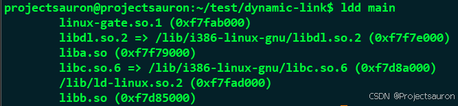

动态链接过程分析
[toc]
上文 静态链接过程分析 讲解了静态链接的过程，尤其强调了重定位的过程。本文将继续介绍动态链接的过程。
一、前言
静态链接得到的可执行程序，被操作系统加载之后就可以直接执行。
因为在链接的时候，链接器已经把所有目标文件中的代码、数据等 Section，都组装到可执行文件中了。并且把代码中所有使用的外部符号（变量、函数），都进行了重定位（即：把变量、函数的地址，都填写到代码段中需要重定位的地方），因此可执行程序在执行的时候，不依赖于其它的外部模块即可运行。
这里的前提是可执行文件是可写的。
而对于动态链接来说，在编译阶段，仅仅是在可执行文件或者动态库中记录了一些必要的信息。
真正的重定位过程，是在这个时间点来完成的：可执行程序、动态库被加载之后，调用可执行程序的入口函数之前。
只有当所有需要被重定位的符号被解决了之后，才能开始执行程序。既然也是重定位，与静态链接过程一样：也需要把符号的目标地址填写到代码段中需要重定位的地方。
但是对于动态链接，这里有个问题：对于内存的访问是有权限控制的，一般来说：
- 代码段：可读、可执行
- 数据段：可读、可写
如果进行符号重定位，就需要对代码进行修改（填写符号的地址），但是代码段又没有可写的权限，那该怎么办呢？
要解决这个问题，那就涉及到了 Linux 中的动态链接器的核心工作。
既然代码段在被加载到内存中之后不可写，但是数据段是可写的。在代码段中引用的外部符号，可以在数据段中增加一个跳板：让代码段先引用数据段中的内容，然后在重定位时，把外部符号的地址填写到数据段中对应的位置，如下图所示：

二、示例程序
下面还是来结合简单的示例来分析：
我们需要 3 个源文件来讨论动态链接中重定位的过程：main.c、a.c、b.c，其中的 a.c 和 b.c 被编译成动态库，然后 main.c 与这两个动态库一起动态链接成可执行程序。它们之间的依赖关系是：
 代码如下：
代码如下：
1 | |
定义一个全局变量和一个全局函数，被
a.c调用。
1 | |
- 定义了 2 个全局变量：一个静态，一个非静态；
- 定义了 3 个函数：
func_a2是静态函数，只能在本文件中调用；func_a1和func_a3是全局函数，可以被外部调用- 在
main.c中会调用func_a1。
1 | |
- 利用
dlopen函数（第一个参数传入 NULL），来打印此进程中的一些符号信息（变量和函数）- 赋值给
liba.so中的变量 a2，然后调用liba.so中的func_a1函数
然后将这三个源文件编译成动态库和可执行文件：
1 | |
-fPIC参数意思是：生成位置无关代码（Position Independent Code），这也是动态链接中的关键- 既然动态库是在运行时加载，那为什么在编译的时候还需要指明?因为在编译的时候，需要知道每一个动态库中提供了哪些符号。Windows 中的动态库的显性的导出和导入标识，更能体现这个概念(
__declspec(dllexport), __declspec(dllimport))。
然后我们可以用 patchelf 工具来查看一个可执行文件或动态库依赖于哪个模块：
1 | |

三、动态库的加载过程
1、动态链接器加载动态库
当执行 main 程序的时候，操作系统首先把 main 加载到内存，然后通过 .interp 段信息来查看该文件依赖哪些动态库：
1 | |
上图中的字符串 /lib/ld-linux.so.2，就表示 main 依赖动态链接库。
ld-linux.so.2 也是一个动态链接库，在大部分情况下动态链接库已经被加载到内存中了（动态链接库就是为了共享），操作系统此时只需要把动态链接库所在的物理内存，映射到 main 进程的虚拟地址空间中就可以了，然后再把控制权交给动态链接器。
然后，动态链接器发现：main 依赖 liba.so，于是它就在虚拟地址空间中找一块能放得下 liba.so 的空闲空间，然后把 liba.so 中需要加载到内存中的代码段、数据段都加载进来。当然，在加载 liba.so 时，又会发现它依赖 libb.so，于是又把在虚拟地址空间中找一块能放得下libb.so 的空闲空间，把 libb.so 中的代码段、数据段等加载到内存中，示意图如下所示：

动态链接器自身也是一个动态库，而且是一个特殊的动态库：它==不依赖于其他的任何动态库==，因为当它被加载的时候，没有人帮它去加载依赖的动态库，否则就变成死循环了。
2、动态库的加载地址
一个进程在运行时的实际加载地址(或者说虚拟内存区域)，可以通过指令读取出来：
1 | |
这里插个问题，当我运行 main 的时候，报了如下的错误：
然后，我用 ldd 命令检查了一下 main 的动态库依赖关系：
至于找不到的情况分为两种:
- 系统里根本不存在
liba.so库； liba.so库在系统中存在，但是动态链接器找不到，即liba.so库的位置没有告知动态链接器。
系统里当然找不到 liba.so，因为这是我们自己写的。所以问题出现的原因是第二条。
当然还要包含
libb.so
所以，只要把动态库 liba.so 的绝对路径添加到动态链接器的搜索路径中，那么动态链接器就可以获取到动态库 liba.so 的绝对路径，接着就可以找到动态库文件 liba.so，将动态库文件载入内存，然后就可以使用动态库里面的代码，最终可执行程序 main 就可以成功运行，不会报错。
动态链接器搜索动态库绝对路径的搜索顺序为：DT_RPATH 段→环境变量 LD_LIBRARY_PATH→/etc/ld.so.cache 文件列表→/lib/ 或 /usr/lib 目录。
因此，添加动态库绝对路径的方法也有很多种
接下来，我们就按照上述分析进行操作。
这里有两个方法，一个是临时的，一个是永久性的。
- 临时环境变量
输入命令（注意路径改成自己的动态库所在的路径）：
1 | |
然后可以 echo 这个变量检查一下：

现在 main 的链接正常了：

- 环境变量
在 ~/.bashrc 里输入：
1 | |
然后退出，在使能刷新一下：
1 | |
一样可以，这里就不演示了。
再打开一个终端，找到 main 的进程号：

输入命令 cat /proc/80962/maps 可以看到当我的虚拟机中执行 main 程序时，看到的地址信息是：

另外，还可以看到 C 库（libc-2.31.so）、动态链接器（ld-2.31.so）以及动态加载库 libdl-2.31.so 的虚拟地址区域，布局如下：
代码段 rx，数据段 rw
可以看出 main 可执行程序是位于低地址，所有的动态库都位于 4G 内存空间的最后 1G 空间中。
还有另外一个指令也很好用 $ pmap [进程的 pid]，也可以打印出每个模块的内存地址：

四、符号重定位
1、全局符号表
在上一篇文章的静态链接中学习过，链接器在扫描每一个目标文件(.o 文件)的时候，会把每个目标文件中的符号提取出来，构成一个全局符号表。
然后在第二遍扫描的时候，查看每个目标文件中需要重定位的符号，然后在全局符号表中查找该符号被安排在什么地址，然后把这个地址填写到引用的地方，这就是静态链接时的重定位。
但是动态链接过程中的重定位，与静态链接的处理方式差别就大很多了，因为每个符号的地址只有在==运行==的时候才能知道它们的地址。例如：liba.so 引用了 libb.so 中的变量和函数，而 libb.so 中的这两个符号被加载到什么位置，直到 main 程序准备执行的时候，才能被链接器加载到内存中的某个随机的位置。
也就是说：动态链接器知道每个动态库中的代码段、数据段被加载的内存地址，因此动态链接器也会维护一个全局符号表，其中存放着每一个动态库中导出的符号以及它们的内存地址信息。
在示例代码 main.c 函数中，我们通过 dlopen 返回的句柄来打印进程中的一些全局符号的地址信息，输出内容如下：

可以看到：在全局符号表中，没有找到 liba.so 中的变量 a1 和函数 func_a2 这两个符号，因为它俩都是 static 类型的，在编译成动态库的时候，没有导出到符号表中。
动态链接库中保护两个符号表：
.dynsym：动态符号表: 表示模块中符号的导出、导入关系).symtab：符号表: 表示模块中的所有符号

2、全局偏移表 GOT
在示例代码中，liba.so 是比较特殊的，它既被 main 可执行程序所依赖，又依赖于 libb.so。而且，在 liba.so 中，定义了静态、动态的全局变量和函数，可以很好的概况很多种情况，因此这部分内容就主要来分析 liba.so 这个动态库。
前文说过：代码重定位需要修改代码段中的符号引用，而代码段被加载到内存中又没有可写的权限，动态链接解决这个矛盾的方案是：增加一层间接性。
例如：liba.so 的代码中引用了 libb.so 中的变量 b，在 liba.so 的代码段，并不是在引用的地方直接指向 libb.so 数据段中变量 b 的地址，而是指向了 liba.so 自己的数据段中的某个位置，在==重定位==阶段，链接器再把 libb.so 中变量 b 的地址填写到这个位置。
因为 liba.so 自己的代码段和数据段位置是相对固定的，这样的话，liba.so 的代码段被加载到内存之后，就再也不用修改了。而数据段中这个间接跳转的位置，就称作：全局偏移表(GOT，Global Offset Table)。
liba.so 的代码段中引用了 libb.so 中的符号 b，既然 b 的地址需要在重定位时才能确定，那么就在数据段中开辟一块空间（GOT表)，重定位时把 b 的地址填写到 GOT 表中。
而 liba.so 的代码段中，把 GOT 表的地址填写到引用 b 的地方，因为 GOT 表在==编译==阶段是可以确定的，使用的是==相对地址==。这样，就可以在不修改 liba.so 代码段的前提下，动态地对符号 b 进行了重定位！
其实，在一个动态库中存在 2 个 GOT 表，分别用于重定位变量符号（section 名称：.got）和函数符号（section 名称：.got.plt）。也就是说：
- 所有变量类型的符号重定位信息都位于
.got中 - 所有函数类型的符号重定位信息都位于
.got.plt中
并且，在一个动态库文件中，有两个特殊的段（.rel.dyn 和 .rel.plt）来告诉链接器：.got 和 .got.plt 这两个表中，有哪些符号需要进行重定位。
3、liba.so 动态库文件的布局
为了更深刻的理解 .got 和 .got.plt 这两个表，有必要来拆解一下 liba.so 动态库文件的内部结构。
通过 readelf -S liba.so 指令来看一下这个 ELF 文件中都有哪些 section：

dynamic段
在静态链接，elf文件有一个文件头，里面记录了一些静态链接所需要的信息，比如比如需要的符号表，重定位表等。
而在共享对象中，需要动态链接的变量和函数也需要相应的信息，为了方便动态链接器的执行，在共享对象中，有一个专门的dynamic段，汇总了和动态链接有关的段的信息，方便动态链接器使用。
可以看到：一共有 29 个 section，其中的 22、23 就是两个 GOT 表。
另外，从装载的角度来看，装载器并不是把这些 sections 分开来处理，而是根据不同的读写属性，把多个 section 看做一个segment（ELF 的运行视图）。再次通过指令 readelf -l liba.so，来查看一下 segment 信息：
注意看上面两张图红圈部分的地址信息
由上面两张图可以看出：
- section 0~18 都是可读、可执行权限，被当做一个 segment
- section 19 ~ 25 都是可读、可写的权限，被当作另一个 segment
再来重点看一下 .got 和 .got.plt 这两个 section，可见：
.got和.got.plt与数据段一样，都是可读、可写的，所以被当做同一个 segment 被加载到内存中。
通过以上这 2 张图(红色矩形框)，可以得到 liba.so 动态库文件的内部结构如下：
4、liba.so 动态库的虚拟地址
来继续观察 liba.so 文件 segment 信息中的 VirtAddr 列，它表示的是==被加载到虚拟内存中的地址==：
因为编译动态库时，使用了代码位置无关参数（
-fPIC)，这里的虚拟地址从0x0000 0000开始。
当 liba.so 的代码段、数据段被加载到内存中时，动态链接器找到一块空闲空间，这个空间的开始地址，就相当于一个基地址。
liba.so 中的代码段和数据段中所有的虚拟地址信息，只要加上这个基地址，就得到了实际虚拟地址。所以结合前面的信息可得：
5、GOT 表的内部结构
现在，我们已经知道了 liba.so 库的文件布局，也知道了它的虚拟地址，此时就可以来进一步的看一下 .got 和 .got.plt 这两个表的内部结构了。从刚才的图片中看出：
.got表的长度是 0x18，说明有 6 个表项(每个表项占 4 个字节).got.plt表的长度是 0x18，说明有 6 个表项
上文已经说过，这两个表是用来重定位所有的变量和函数等符号的。那么：liba.so 通过什么方式来告诉动态链接器需要对 .got 和 .got.plt 这两个表中的表项进行地址重定位呢？
- 在静态链接的时候，目标文件是通过两个重定位表
.rel.text和.rel.data这两个段信息来告诉链接器的。 - 对于动态链接来说，也是通过两个重定位表来传递需要重定位的符号信息的，只不过名字有些不同：
.rel.dyn和.rel.plt。
通过指令 readelf -r liba.so来查看重定位信息：
由上图可以看出：
liba.so引用了外部符号 b，类型是R_386_GLOB_DAT，这个符号的重定位描述信息在.rel.dyn段中liba.so引用了外部符号 func_b, 类型是R_386_JUMP_SLOT，这个符号的重定位描述信息在.rel.plt段中

由上图可以看出：
liba.so的代码中在操作变量 b 的时候，就到.got表中的0x0000 3fec这个地址处来获取变量 b 的真正地址liba.so的代码中在调用 func_b 函数的时候，就到.got.plt表中的0x0000 400c这个地址处来获取函数的真正地址
6、反汇编 liba.so 代码
下面就来反汇编一下 liba.so，看一下指令码中是如何对这两个表项进行寻址的。
执行反汇编指令：$ objdump -d liba.so，这里只贴出 func_a1 函数的反汇编代码：
call 10b0 <__x86.get_pc_thunk.bx> 的功能是：把下一条指令(add $0x2de5,%ebx)的地址存储到 %ebx 中，也就是：
1 | |
然后执行: add $0x2de5,%ebx，让 %ebx 加上 0x2de5，结果就是：%ebx = 0x4000。
看下前面的图，0x4000 正是 .got.plt 表的开始地址！
紧接着看第二个红框。
mov -0x8(%ebx),%eax：先用 %ebx 减去 0x8 的结果，存储到 %eax 中，结果是：%eax = 0x3fec，这个地址正是变量 b 在.got表中的虚拟地址。movl $0x1f,(%eax)：在把 0x1f(十进制就是 31)，存储到 0x3fec 表项中存储的地址所对应的内存单元中（libb.so的数据段中的某个位置）。
因此，当链接器进行重定位之后，0x3fec 表项中存储的就是变量 b 的真正地址，而上面这两步操作，就把数值 31 赋值给变量 b 了。
第 3 个红色矩形框，是调用函数 func_b，稍微复杂一些，跳转到符号 func_b@plt 的地方，看一下反汇编代码：

jmp 指令调用了 %ebx + 0xc（得到 0x400c）处的那个函数指针，从上面的 .got.plt 布局图中可以看出，重定位之后这个表项中存储的正是 func_b 函数的地址（libb.so 中代码段的某个位置），所以就正确的跳转到该函数中了。
五、补充
1、延迟绑定 plt
实际应用中，共享对象可能会访问大量的外部函数，也就是说，有一个庞大的 got.plt 表。
当加载该共享对象时，理论上，动态链接器就要将该共享对象涉及到的外部模块全部加载并链接，这可能会耗费大量时间，而且，很多外部函数，也许在整个进程生命周期内，都不会被实际调用一次，加载消耗的时间就浪费了。
为了优化这一点，引入延迟绑定（lazy binding）技术。具体办法是，调用外部函数的指令不直接从 got.plt 中取函数地址，而是新建一个plt段，从这个里面取函数的地址。
假设，某个共享对象 a 访问共享对象 b 中的 bar 函数，那么，在 got.plt 和 plt 都有一个 bar 函数的项。
plt 中的 bar 函数的项的内容是：
1 | |
我们来分析一下这几句话。
我们假设一个场景，即共享对象在实际执行时，第一次实际调用 bar 函数，这个时机正是体现延迟绑定技术的时候。
jmp *(bar@got.plt) 这句话是说跳转到 got.plt 中 bar 函数的地址，我们知道，因为采用了延迟绑定， 此时这里的地址并不是 bar 的地址。那是什么地址呢？答案是链接器在初始化时，已经帮我们填好了，就是下一条 push 指令的地址。
于是，跳转到了下一条 push 语句，这个语句的 n 又是什么呢？
答案是，为了实现延迟绑定，还建了一个新的段，rel.plt。这个段也是一个重定位表，记录了 got.plt 中的 bar 的位置，告诉链接器，这个 bar 的位置要进行重定位。n 就是 bar 函数在 rel.plt 中的位置。我们可以将其称作 bar 函数的 id。
接下来，push moduleID，是把 bar 所在的模块的 id 入栈。
回顾上面两个 push，我们看到，入栈了模块的 id，以及要使用该模块的函数 bar 的 id n。
然后调用 _dl_runtime_resolve，该函数就帮我们加载并链接要使用的外部模块，并在 got.plt 中更新 bar 函数的地址。该函数会使用到我们刚刚 push 的两个值，这是它领受的任务。
一旦这个过程完成，再次通过 plt 调用 bar 函数时，就会跳转到真正的 bar 函数了。
总结一下，为了实现延迟绑定，又引入了两个新的段，plt 和 rel.plt。